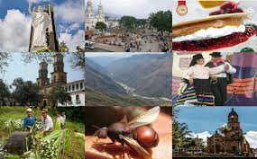

HISTORIA
Cúcuta, fundada en 1733, es un importante punto comercial y cultural entre Colombia y Venezuela. Su historia incluye eventos clave como la independencia y el desarrollo del comercio fronterizo.

CULTURA
La cultura cucuteña es rica y variada, influenciada por sus tradiciones indígenas y la mezcla con culturas españolas. Las festividades como el Carnaval de Cúcuta y la Feria de las Flores son ejemplos de su riqueza cultural.
GASTRONOMÍA
Entre los platos típicos se encuentran la arepa de huevo, el mute cucuteño y la empanada. La música, especialmente el vallenato, también es parte fundamental de su identidad.
ATRACTIVOS TURISTICOS
Cúcuta ofrece una variedad de atractivos turísticos, desde parques naturales hasta centros históricos. Entre los más destacados están el Parque Santander y la Catedral de Cúcuta.